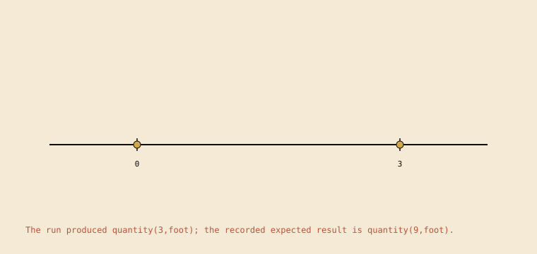
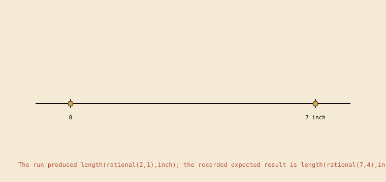
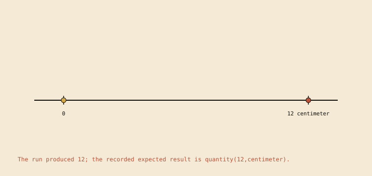
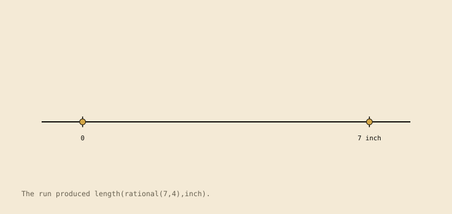
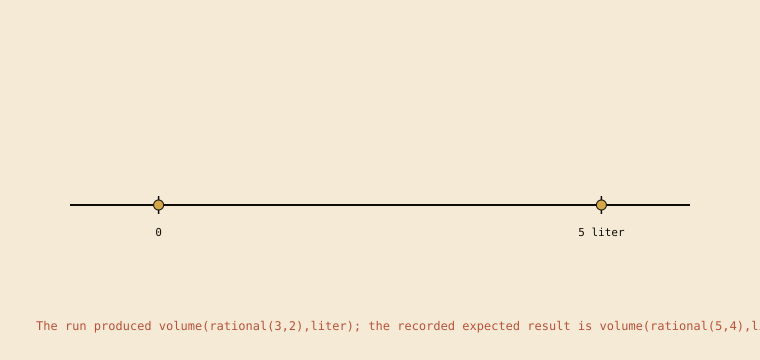
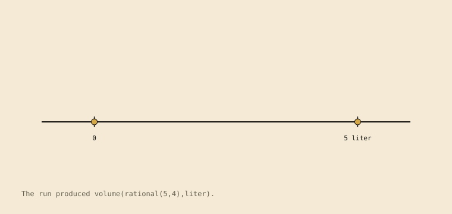
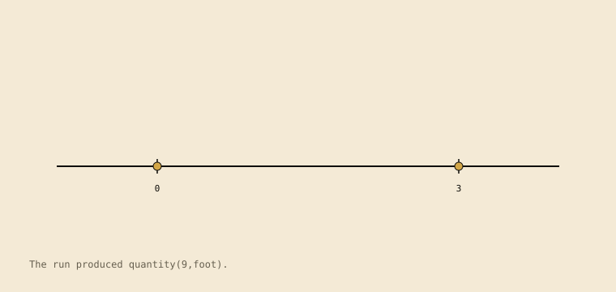
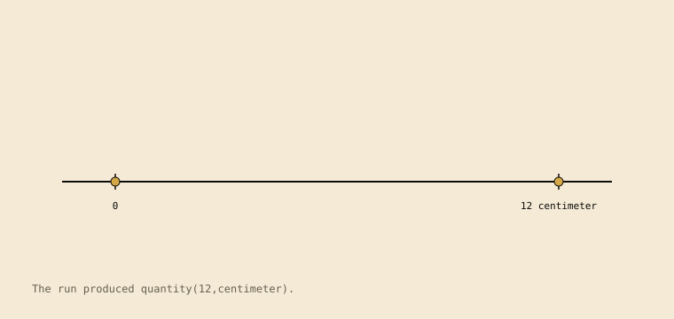

Family path composite: the action paths of all the family's automata, merged at shared prefixes and identical suffixes. The labels are canonical action names. Its nodes are path points. Path points are not states of any single automaton. Loops are not unfolded.
1.change_unit_label_without_scaling

The run produced quantity(3,foot); the recorded expected result is quantity(9,foot). The scene is derived from the contract run (4tracesteps).Recorded transition graph. Local action names label the transitions.
Computed structure:linear_trace. no recorded branch or loop; the recorded transition graph has one accepting path. 5 states, 4 distinct actions, 0 branching states, 0 loop transitions; 4 static table rows and 4 observed table rows.
2.count_marks_not_intervals

The run produced length(rational(2,1),inch); the recorded expected result is length(rational(7,4),inch). The scene is derived from the contract run (3tracesteps).Recorded transition graph. Local action names label the transitions.
Computed structure:linear_trace. no recorded branch or loop; the recorded transition graph has one accepting path. 4 states, 3 distinct actions, 0 branching states, 0 loop transitions; 3 static table rows and 3 observed table rows.
3.drop_unit_from_measured_quantity_change

The run produced 12; the recorded expected result is quantity(12,centimeter). The scene is derived from the contract run (4tracesteps).Recorded transition graph. Local action names label the transitions.
Computed structure:linear_trace. no recorded branch or loop; the recorded transition graph has one accepting path. 5 states, 4 distinct actions, 0 branching states, 0 loop transitions; 4 static table rows and 4 observed table rows.
4.linear_unit_iteration

The run produced length(rational(7,4),inch). The scene is derived from the contract run (5tracesteps).Recorded transition graph. Local action names label the transitions.
Computed structure:linear_trace. no recorded branch or loop; the recorded transition graph has one accepting path. 6 states, 5 distinct actions, 0 branching states, 0 loop transitions; 5 static table rows and 5 observed table rows.
5.liquid_volume_count_marks_not_intervals

The run produced volume(rational(3,2),liter); the recorded expected result is volume(rational(5,4),liter). The scene is derived from the contract run (3tracesteps).Recorded transition graph. Local action names label the transitions.
Computed structure:linear_trace. no recorded branch or loop; the recorded transition graph has one accepting path. 4 states, 3 distinct actions, 0 branching states, 0 loop transitions; 3 static table rows and 3 observed table rows.
6.liquid_volume_scale_reading

The run produced volume(rational(5,4),liter). The scene is derived from the contract run (5tracesteps).Recorded transition graph. Local action names label the transitions.
Computed structure:linear_trace. no recorded branch or loop; the recorded transition graph has one accepting path. 6 states, 5 distinct actions, 0 branching states, 0 loop transitions; 5 static table rows and 5 observed table rows.
7.unit_conversion_by_iteration

The run produced quantity(9,foot). The scene is derived from the contract run (4tracesteps).Recorded transition graph. Local action names label the transitions.
Computed structure:linear_trace. no recorded branch or loop; the recorded transition graph has one accepting path. 5 states, 4 distinct actions, 0 branching states, 0 loop transitions; 4 static table rows and 4 observed table rows.
8.unit_preserving_measured_quantity_change

The run produced quantity(12,centimeter). The scene is derived from the contract run (4tracesteps).Recorded transition graph. Local action names label the transitions.
Computed structure:linear_trace. no recorded branch or loop; the recorded transition graph has one accepting path. 5 states, 4 distinct actions, 0 branching states, 0 loop transitions; 4 static table rows and 4 observed table rows.